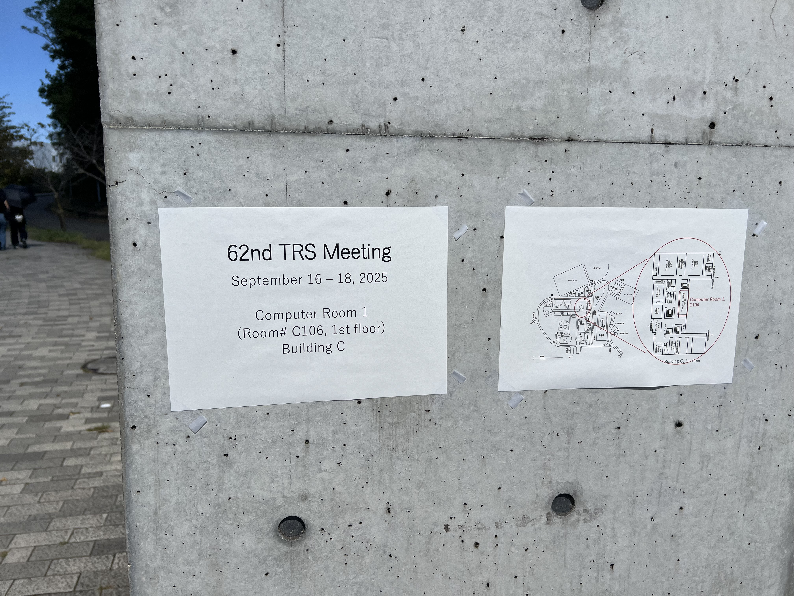
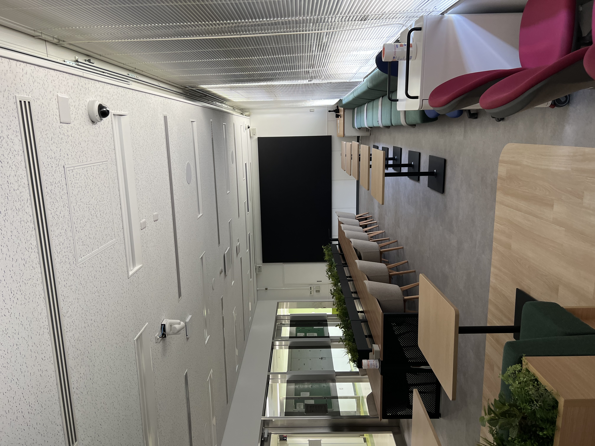
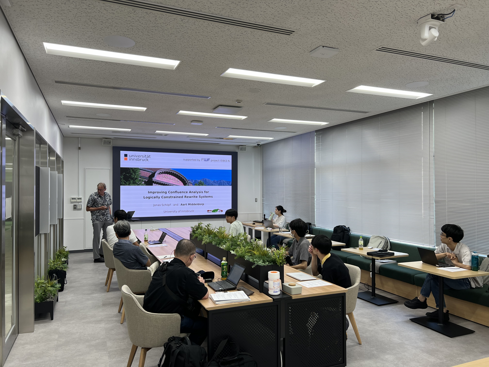
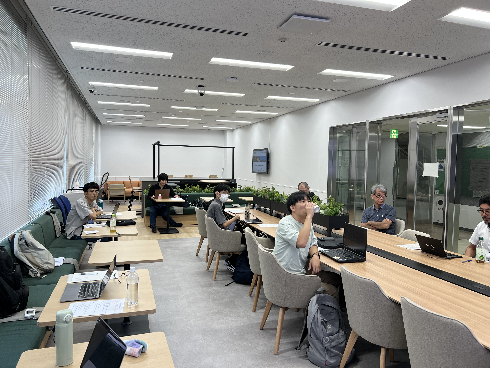

News
- September 19, 2025: Photos are added.
About TRS meeting
Term Rewriting Meeting (TRS Meeting) is a biannual informal workshop that aims at promoting the research on rewriting and related areas. Participants are requested to give a talk(s) of approximately 15 – 60 minutes in English on their research activities. The subject of the talk may not be one's original result; for example, explaining an interesting paper is perfectly OK. See also Rewriting Researchers Forum for further information. We should like to invite all of you to the upcoming TRS Meeting at Nagakute Campus, Aichi Prefectural University. Partial participation is also welcome.
Photos
|  |  |  |  |
Basic Information
- Dates:
- September 16 – 18, 2025
- Venue:
- Computer Room 1 (Room# C106, 1st floor), School of Information Science & Technology Building, Nagakute Campus, Aichi Prefectural University
- （愛知県立大学 長久手キャンパス 情報科学部棟（C棟）１階 コンピュータ演習室１（C106））
- Access:
- See Access to Nagakute Campus of Aichi Prefectural University
- Registration Fees:
- Free
- Accommodation:
- Please book a hotel yourself. Organizers recommend
- Hotel ROUTE-INN Grand Nagoya Fujigaoka Ekimae
- （ホテルルートインGrand名古屋藤が丘駅前）
- The above hotel has a large public bath with natural hot spring water.
- Banquet:
-
Banquet will be organized at Izakaya around Fujigaoka Station on September 16 and 17. Venues and prices will be announced later.- September 16 (Tue), 18:30: 寿司と天ぷらとわたくし 名古屋 藤が丘店 (4,000 JPY, all-you-can-drink included)
- September 17 (Wed), 18:30: とりとり亭 藤が丘店 (4,000 JPY, all-you-can-drink included)
Recommendation to Visit
- Ghibli Park（ジブリパーク）
- Ghibli Park (ジブリパーク) is very near Nagakute Campus (the closest station is the same as Nagakute Campus).
- Everyone can enter to the park, but needs tickets for some special areas.
- Official excursion of the 62nd TRS meeting is not organized.
- Tickets, which must be reserved in advance, are extremely popular and highly competitive.
- Ticket reservations for September will begin on July 10th at 14:00 (JST). Please go to the reservation page: Boo-Woo チケット or Tickets (Overseas Purchase).
- September 18 afternoon would be a good opportunity to visit there.
Schedule (tentative)
- Opening:
- 14:00, September 16 (Tuesday)
- Closing:
- 12:00, September 18 (Thursday)
Program (tentative)
Registration
Please register via either of the following ways no later than August 29th, 2025.
- via the
form https://forms.cloud.microsoft/r/Pp0CguxnxP,
or - send the registration form below to Naoki Nishida
(
nishida [at] i.nagoya-u.ac.jp) and Misaki Kojima (kojima [at] i.nagoya-u.ac.jp)
----------------------------------------------------------------------------
Registration Form of the 62nd TRS Meeting
Name:
Affiliation:
Title of talk (*):
Duration of talk (*):
Participation in Banquets: [Sept. 16 / Sept.17 / decide later]
Requests/comments (on foods, partial participation, etc.):
----------------------------------------------------------------------------
Participants
- Nao Hirokawa (JAIST)
- Kenta Ito (Nagoya U.)
- Munehiro Iwami (Iwate Prefectural U.)
- Hideto Kasuya (Aichi Prefectural U.)
- Fuyuki Kawano (JAIST)
- Misaki Kojima (Nagoya U.)
- Aart Middeldorp (U. Innsbruck)
- Naoki Nishida (Nagoya U.)
- Teppei Saito (JAIST)
- Masahiko Sakai (Nagoya U.)
- Akihisa Yamada (AIST)
Organizers
- Naoki Nishida (Nagoya U.)
- Hideto Kasuya (Aichi Prefectural U.)
- Misaki Kojima (Nagoya U.)